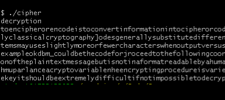

-
Double Pendulum
Above is my double Pendulum, and the code for which can be found on my GitHub under my personal-website repository. I coded it in Javascript as a fun project because I found the path of it to look really awesome and wanted to experiment with it and let others too! I am working towards making it customizable, but currently, the "stats" button can be clicked at any time during the animation to give the current value such as the angles each arm of the pendulum is at and what their respective velocities are.
-
Vinegre Cipher
While studying crpytography in a number theory course, I became interested in crpytography. It is an extremely useful tool for encoding things - that is why cryptography comes to play in cybersecurity and cryptocurrencys.
The vinegre cipher, a more complex variant of the caesar cipher, is by no means secure but made for a good project. The idea behind certain ciphers is to interfere with frequency analysis, which at its base level, can never be avoided unless the language is made up.
My project, on GitHub as vinegre-cipher, was written in C++ with the idea that a brute force attack would be faster in a lower level language. So, it of course has the basic functionality of takin a text file or a string and encoding it or decoding it given a keyword. The more interestng part, however, is decryption without a given key.
First, I looked at spacing between collections of letters. Specifically, I searched the encrypted message for sequential letters that appeared multiple times throughout in the same order. I ran this for sequences of letters of length 2,3,4,5, and so on, also known as n-grams. Once I found the spacings, I would take the greatest common denominator of them since the spacing could be any multiple of what the actual key length is.
One problem of using a GCD is that it may simplify too much. If the key length is say for, the gcd would always return two. So, my program takes multiples of the gcd to determine possible key lengths.
Finally, with possible key lengths, my program compares all the newly found key lengths, and all the possible shifts ('a' - 'z'), for each index individually with the frequency analysis of leters in the english language. My program also outputs the top two results for each index of the word as frequency analysis isn't perfect, especially with shorter messages. Below is an example with screenshots of the inputs and command line outputs of my program encrpyting and then decrpyting the message without giving the program the key.

Program strips punctuation and spacing and shifts all letters to lowercase. Snippets of the text and its encryption are shown below.


Upon running the programs solver, the program decided that the key length is a multiple of two and tried various ones (2,4,6, and 8). As you can see, there are two columns of letters; frequency analysis isn't perfect and so the program gives two options for each index.

Using the key highlighted above, we run our decrypt function and our progam outputs the original text!
-
TBD
Keep an eye out for an upcoming project in this category!